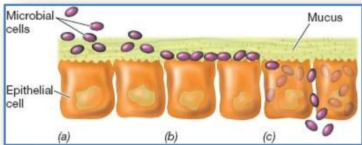
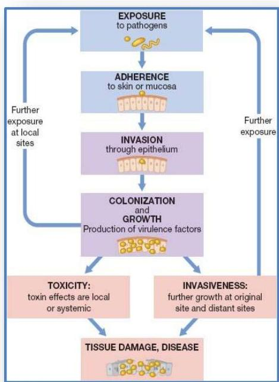
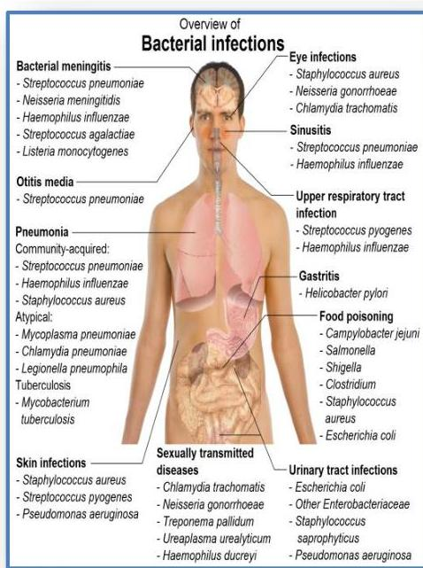
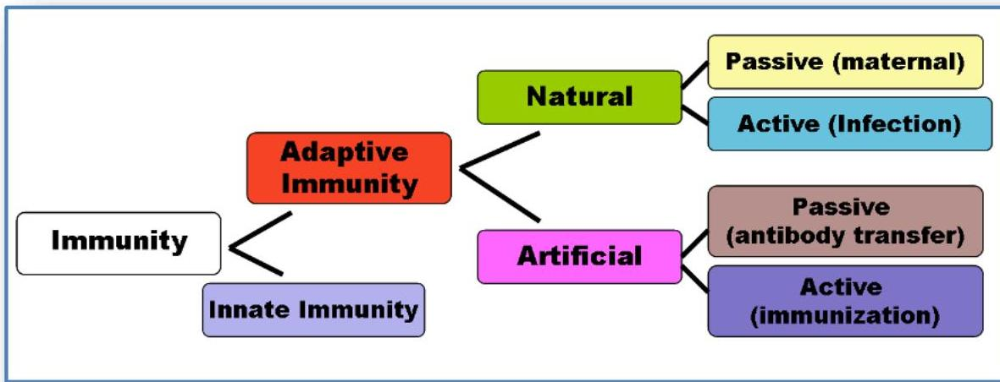

🏥
Topic 11
Introduction to Medical Microbiology and Immunity
11.1
Medical microbiology
Human–Microbial Interactions:
- Through normal everyday activities, the human body is exposed to countless microorganisms in the environment.
- In addition, hundreds of species and countless individual microbial cells, collectively referred to as the normal microbial flora, grow on or in the human body.
- Most, but not all, microorganisms are benign; a few contribute directly to our health, and even fewer pose direct threats to health.
Colonization by Microorganism:
- Mammals in utero develop in a sterile environment and have no exposure to microorganisms.
- Starting with the birth process, colonization, growth of a microorganism after it has gained access to host tissues, begins as animals are exposed to microorganisms.
- The skin surfaces are readily colonized by many species.
- Likewise, the oral cavity and gastrointestinal tract acquire microorganisms through feeding and exposure to the mother's body, which, along with other environmental sources, initiates colonization of the skin, oral cavity, upper respiratory tract, and gastrointestinal tract.
- Different populations of microorganisms colonize individuals in different localities and at different times.
- Genetic factors also play a role. Thus, the normal microbial flora is highly dependent on the conditions to which an individual is exposed.
- The normal flora is highly diverse in each individual and may differ significantly between individuals, even in a given population
Pathogen:
Host
An organism that harbors a parasite
Parasite
Another organism that lives on or in the host and causes damage.
Pathogens
Microbial parasites.
Pathogenicity
The ability of a parasite to inflict damage on the host.
Opportunistic pathogen
Causes disease only in the absence of normal host resistance.
Virulence
The quantitative measure of pathogenicity.
- The outcome of a host–parasite relationship depends on pathogenicity. Pathogenicity differs considerably among potential pathogens, as does the resistance or susceptibility of the host to the pathogen.
- Neither the virulence of the pathogen nor the relative resistance of the host is a constant factor.
- The host–parasite interaction is a dynamic relationship between the two organisms, influenced by changing conditions in the pathogen, the host, and the environment.
Infection and Disease:
- Infection refers to any situation in which a microorganism is established and growing in a host, whether or not the host is harmed.
- Disease is damage or injury to the host that impairs host function.
- Infection is not synonymous with disease because growth of a microorganism on a host does not always cause host damage.
- Thus, species of the normal microbial flora have infected the host, but seldom cause disease.
- However, the normal flora sometimes cause disease if host resistance is compromised, as happens in diseases such as cancer and acquired immune deficiency syndrome (AIDS).
Host–Parasite Interactions
- Animal hosts provide favorable environments for the growth of many microorganisms.
- They are rich in the organic nutrients and growth factors required by chemoorganotrophs, and provide conditions of controlled pH, osmotic pressure, and temperature.
- However, the animal body is not a uniform environment.
- Each region or organ differs chemically and physically from others and thus provides a selective environment where the growth of certain microorganisms is favored.
- For example, the skin, respiratory tract, and gastrointestinal tract provide selective chemical and physical environments that support the growth of a highly diverse microflora.
- Animals also possess defense mechanisms that collectively prevent or inhibit microbial invasion and growth.
- The microorganisms that successfully colonize the host have circumvented these defense mechanisms.
The Infection Process:
- Infections frequently begin at sites in the animal's mucous membranes.
- Mucous membranes consist of single or multiple layers of epithelial cells, tightly packed cells that interface with the external environment.
- They are found throughout the body, lining the urogenital, respiratory, and gastrointestinal tracts.
- Mucous membranes are frequently coated with a protective layer of viscous soluble glycoproteins called mucus.
- Microorganisms that contact host tissues at mucous membranes may associate loosely with the mucosal surface and are usually swept away by physical processes.
- Microorganisms may also adhere more strongly to the epithelial surface as a result of specific cell–cell recognition between pathogen and host.
- Tissue infection may follow, breaching the mucosal barrier and allowing the microorganism to invade deeper into submucosal tissues.

Bacterial interactions with mucous membranes. (a) Loose association. (b) Adhesion. (c) Invasion into submucosal epithelial cells.


Microorganisms and mechanisms of pathogenesis
11.2
Introduction to immunology
- Immunity: is a biological term that describes a state of having sufficient biological defenses to avoid infection, disease, or other unwanted biological invasion.
- Immunity involves both specific and non-specific components.
- The non-specific components act either as barriers or as eliminators of wide range of pathogens irrespective of antigenic specificity.
- Other components of the immune system adapt themselves to each new disease encountered and are able to generate pathogen-specific immunity.
1. Innate immunity:
- Innate immunity or nonspecific, immunity is the natural resistance with which a person is born.
- It provides resistance through several physical, chemical, and cellular approaches.
- Microbes first encounter the epithelial layers, physical barriers that line our skin and mucous membranes.
- Subsequent general defenses include secreted chemical signals (cytokines), antimicrobial substances, fever, and phagocytic activity associated with the inflammatory response.
- The phagocytes express cell surface receptors that can bind and respond to common molecular patterns expressed on the surface of invading microbes. Through these approaches, innate immunity can prevent the colonization, entry, and spread of microbes.
2. Adaptive immunity:
- Adaptive immunity is often sub-divided into two major types depending on how the immunity was introduced:
- Naturally acquired immunity occurs through contact with a disease causing agent, when the contact was not deliberate
- Artificially acquired immunity develops only through deliberate actions such as vaccination.
- Both naturally and artificially acquired immunity can be further subdivided depending on whether immunity is induced in the host or passively transferred from a immune host.
- Passive immunity is acquired through transfer of antibodies or activated T-cells from an immune host, and is short lived — usually lasting only a few months
- Active immunity is induced in the host itself by antigen, and lasts much longer, sometimes life-long. The diagram below summarizes these divisions of immunity.

Knowledge Check
Test Your Understanding
Complete this quiz to assess your comprehension of Medical Microbiology & Immunity.
Loading quiz...